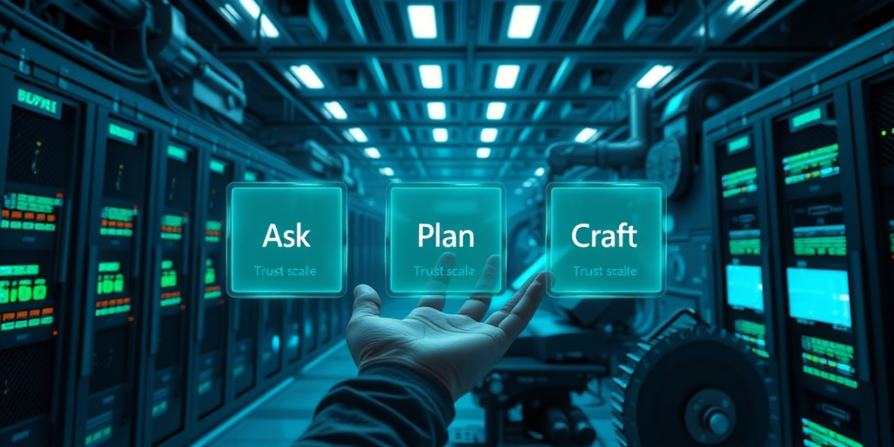

小汪老师的成长洞察 · 属于你的成长专栏
下午四点，你对着电脑说了一句话：‘帮我做一份Q2销售分析报告，数据在桌面那个Excel里。’然后你起身去倒了杯咖啡。回来时，桌面上多了一个PPT文件，图表、排版、结论都已齐备。你打开检查了一遍，直接发给了老板。这不是科幻。腾讯WorkBuddy正在把这件事变成日常。据2026年中国办公智能体市场报告，按日活口径它已是国内最受欢迎的AI办公智能体。
传统的AI对话你用过。你问它怎么做PPT，它给你一堆建议。然后你自己打开PowerPoint往里填。WorkBuddy的逻辑完全不同。你跟它说‘帮我做一份Q2销售分析报告，数据在我桌面上的那个Excel里’。它自己去读那份Excel、分析数据、生成图表、排版成PPT。然后把PPT文件丢给你。你中间不需要碰鼠标。
这背后靠的是几个关键能力。它被授权访问你电脑上的部分文件夹。你自己选的。它能调用你电脑上的软件。它能自动拆解复杂任务。‘帮我做一份报告’不是一步操作。是‘读数据→清洗→分析→可视化→排版→检查→导出’。它自己分成子步骤逐个执行。
很多人讨论AI能力变强。但WorkBuddy带来的变化不在模型能力。AI第一次拿到了桌面的控制权。ChatGPT活在浏览器标签页里。WorkBuddy活在你的文件系统和本地软件里。这是从对话工具到智能体办公平台的一次架构跃迁。
你可能会觉得，这不就是RPA加上大模型吗。但RPA需要你预先配置每一步流程。WorkBuddy不需要。你只需要说一句话。它自己理解意图，自己规划路径，自己调用工具。它像一个坐在你电脑前的实习生。只不过这个实习生不会累，不会抱怨，也不会辞职。
底层接了混元大模型。同时支持DeepSeek、GLM、Kimi等多模型自由切换。但模型不是这个故事的主角。主角是那个被你授权的本地执行环境。AI第一次能碰到你的文件，能操作你的软件。这才是WorkBuddy最核心的差异。
你可以想象一个场景。你有一百份简历需要筛选。你告诉WorkBuddy：‘把桌面简历文件夹里符合三年以上经验、有项目管理背景的人挑出来，汇总成一张Excel，按匹配度排序。’它去打开每一份简历，提取关键信息，比对条件，然后生成汇总表。你只需要最后看一眼。这比任何聊天机器人给你的建议都直接。
有人会担心安全。WorkBuddy不是一上来就能看你所有文件。你指定哪些文件夹它可以访问。它只能在那个范围内活动。你随时可以收回权限。这种设计让用户愿意尝试。因为控制权还在你手里。你把重复劳动外包了出去。
当AI从‘嘴替’变成‘手替’，你与它的关系变了。它不再是一个给你出主意的顾问。它变成了一个能替你执行的员工。你从‘听建议’变成了‘下指令’。这种关系更接近管理，而不是咨询。
你不需要告诉它怎么清洗数据。它自己判断。你不需要选择图表类型。它根据数据特征选。你不需要手动调整排版。它按照常见商业报告的风格来。你只需要说一句话。剩下的它自己搞定。任务拆解、工具调用、模型推理的组合，让这一切发生。
再比如，你需要把一份PDF里的表格数据提取出来，和另一个数据库里的信息做交叉比对，然后生成一份合规报告。你告诉WorkBuddy，它自己打开PDF，用OCR识别表格，连接数据库，写SQL查询，比对数据，标记差异，最后生成报告。整个过程你只说了两句话。
这种能力让WorkBuddy在办公场景里迅速铺开。它不是另一个聊天窗口。它是你电脑里的第二个操作者。你看着鼠标自己移动，窗口自己打开关闭，文件自己生成。这种感觉很奇妙。

WorkBuddy提供了三个模式。Ask：只聊不动手。Plan：先出方案等你确认再执行。Craft：直接干活。这三个模式不是功能列表上的三个选项。是一条用户信任的刻度尺。
Ask模式下，你问它‘怎么做一份市场分析报告’。它给你步骤、框架、注意事项。但不会碰你的文件。这跟ChatGPT差不多。但区别在于，你随时可以切换到Plan或Craft。不需要换工具。信任是一点点建立的。
你第一次用Craft可能会犹豫。你让它在Plan模式下先列出步骤。你检查一遍，觉得没问题，点确认。它执行。你看到结果准确无误。第二次，你可能直接说‘用Craft模式帮我做’。第三次，你连模式都懒得切换了。默认就是Craft。
官方没有写一篇文章说服你信任它。是你的每一次成功任务在替你积累信心。你今天让它处理了一份数据，没出错。明天让它生成了一份报告，格式完美。后天你就敢让它帮你发邮件了。信任是长出来的，不是讲出来的。
日常使用中，80%的任务用Craft直接干。不确定方案的时候切Plan确认一下。纯查资料用Ask省积分。积分系统也配合这个逻辑。Ask每次10-30积分，Plan和Craft消耗更多。但省下的时间远超积分成本。
这个三级设计还有一个隐藏作用。它降低了用户的心理门槛。你不必一上来就交权。你可以从最安全的Ask开始。很多人最初只是把它当搜索工具用。慢慢地，他们发现Plan模式出的方案比自己想的还周全。再后来，他们开始让Craft直接执行。这个路径是自然发生的。
产品经理在这里做对了一件事。他们没有把能力最强的Craft模式放在最显眼的位置。而是让用户自己走过去。用户走过去的每一步，都有一次成功任务做铺垫。这种设计比任何宣传都有效。
比如你要做一份竞品分析。先用Ask查资料，收集信息。然后用Plan让它出分析框架。你调整一下框架，确认。最后用Craft让它生成完整报告。三个模式无缝衔接。你不需要离开一个对话框。
这种模式设计还有一个好处。它让用户对AI的能力边界有清晰的感知。Ask模式下，你知道它只是语言模型。Plan模式下，你看到它的规划能力。Craft模式下，你体验到它的执行能力。每一步都加深你对它的理解。你不会盲目信任，也不会过度怀疑。
信任刻度尺一旦拉到最右，你交出去的不只是鼠标。还有一部分判断力。你开始依赖它。这是好事还是坏事。产品设计者把这个选择权留给了你。你可以永远停在Ask。也可以一路滑到Craft。刻度尺在你手里。
积分系统也设计得很聪明。Ask便宜，Craft贵。但贵不是惩罚，是门槛。它让你在每次选择Craft之前，稍微想一下：‘这件事值得我花积分吗？’这个微小的停顿，防止了滥用。也让你更珍惜Craft的能力。
很多AI产品试图一步到位给你最强能力。WorkBuddy反其道而行。它让你从最弱的能力开始用。这个策略很聪明。它懂人性。
WorkBuddy移动端支持两种执行模式。云端沙箱和远程操控电脑端。云端沙箱是什么。腾讯的服务器上跑着一个Ubuntu Linux虚拟机。里面预装了Python、浏览器、办公软件、文件处理工具等。你在手机上对着App说‘帮我查一下这几篇论文的引用量’。这个任务实际是在腾讯云端的Ubuntu虚拟机里跑的。不在你手机上，也不在你电脑上。虚拟机跑完，结果传回你的手机。
远程操控电脑端是另一种情况。你家里电脑开着WorkBuddy。你在外面用手机App远程指挥它干活。你的电脑执行任务，手机充当遥控器。
PC端的逻辑完全不一样。你在PC上装了WorkBuddy。它直接在你电脑上跑。你的文件、你的软件、你的本地算力。你的电脑本身就是那台虚拟机。PC端的执行环境就是你的本机。调用本机CPU、读取本地硬盘、控制本机软件窗口。
‘手机有云端Ubuntu而PC没有’这个现象，不是因为PC缺了功能。原因恰好相反。手机因为iOS和Android对应用访问本地文件系统、启动其他应用进程都有严格的安全隔离。AI智能体需要的那种操作系统级别的执行权限在手机上拿不到。所以必须绕到云端去解决。PC不需要这个替代品。你的电脑就是执行环境。
这个设计很容易让人困惑。为什么手机端不直接控制手机上的文件。因为手机操作系统不允许。iOS的沙盒机制让每个App只能访问自己的文件。Android虽然宽松一些，但跨应用操作仍然受限。WorkBuddy如果要在手机上直接帮你修图、处理文档，它需要能启动修图软件、读取文档文件。这在手机上几乎不可能。除非你越狱或者root。
所以腾讯的解决方案是：在云端给你一台Linux电脑。那台电脑上没有这些限制。它可以安装任何软件，访问任何文件夹，执行任何脚本。你通过手机App给那台电脑下指令。它干完活把结果传回来。你手机上的WorkBuddy App只是一个远程终端。
PC端不需要这个。Windows和macOS对本地应用的限制少得多。WorkBuddy可以以管理员权限运行，可以调用系统API，可以模拟键盘鼠标操作。你的电脑就是那台强大的执行机器。所以PC端没有云端Ubuntu选项。不是技术做不到，是没必要。
有人会问：那为什么PC端不也提供一个云端环境，这样不依赖本地性能。因为本地执行更快、更安全、不需要网络传输大量文件。而且你的文件在本地，你更放心。云端Ubuntu是手机端的无奈之举，不是PC端的升级选项。
这个设计折射出一个更大的趋势。AI智能体要真正干活，必须拿到操作系统级别的权限。手机生态的封闭性暂时无解。所以云端虚拟机成了唯一通路。未来如果手机厂商开放更多权限，也许手机端也能本地执行。但那时，手机上的安全模型需要彻底重构。
选择Ubuntu而不是Windows作为云端系统，也有讲究。Ubuntu开源、轻量、启动快。一台物理服务器可以虚拟出几十个Ubuntu实例。每个用户的任务在独立的容器里运行，互不干扰。成本可控。如果用Windows，授权费用和资源消耗都会高很多。这是工程上的务实选择。
你可能会想，手机端用云端虚拟机，任务跑在别人电脑上，安全吗。腾讯的云端沙箱在任务结束后会自动销毁虚拟机实例。你的文件在传输过程中加密。任务完成后，临时数据清除。这比很多人想象的要安全。当然，绝对的安全不存在。但这是一个经过权衡的方案。
远程操控电脑端听起来更直接。你家里的电脑性能更强，文件都在本地。但前提是你的电脑必须开着，网络必须稳定。如果你出差在外，家里电脑关机了，这条路就走不通。云端沙箱则是随时可用。你不需要提前打开任何设备。两种模式互补，覆盖了移动办公的主要场景。
你出差在高铁上。手机信号时有时无。你想起明天开会要用的数据还没整理。你打开WorkBuddy App，对着它说：‘帮我把最近三个月的销售数据按区域汇总，做成一张趋势图，发到我邮箱。’然后你放下手机，看窗外。田野和电线杆向后掠去。
那句话没有在高铁上执行。它飞到了腾讯某处机房里的一台Ubuntu虚拟机里。在虚拟桌面上，它打开了你共享的Excel文件。它清洗数据，计算环比增长率，生成折线图，调整颜色，保存图片。然后写邮件，添加附件，点击发送。
你的手机信号重新升到四格的时候，一封新邮件滑进了你的屏幕。附件是一张趋势图，标题、单位、数据来源都标注好了。你不知道你的话穿越了哪个数据中心。你只知道你说了一句话。十分钟后你要的东西出现在了高铁的折叠桌板上。
这就是WorkBuddy最核心的产品直觉。AI不是来陪你聊天的。是来帮你今晚不用加班的。云端虚拟机、本地执行、远程操控PC。三条路是同一条路的不同路段。它们指向的终点，不是你更懂AI，是你今晚十点能睡。
很多人还在讨论AI会不会取代人类。WorkBuddy给出的答案是：AI先取代你的加班。它不跟你讨论哲学。它直接帮你把活干了。你从执行者变成了验收者。你的时间多出来了。这才是AI最朴素的承诺。
你坐在高铁上，看着窗外。你突然意识到，刚才那十分钟里，有一台远在千里之外的虚拟机，正以你的名义，在虚拟的桌面上忙碌。它打开文件，敲击键盘，移动鼠标。而你看着云。这种感觉很奇怪。但也很踏实。
过去我们衡量一个工具好不好，看它能不能让我们更高效。WorkBuddy往前走了一步。它让你从‘操作工具的人’变成了‘提出需求的人’。这个转变很小，但意义很大。你不再需要知道怎么做。你只需要知道要什么。这是脑力劳动里最奢侈的状态。
写给你的话
有个问题值得想一想。当AI替你干得越来越多，你判断它干得好不好的能力会不会退化？你今天还能看出报告里的逻辑漏洞。一年后呢？信任是一把双刃剑。它砍掉了你的重复劳动，也可能砍掉你的敏锐。这不是WorkBuddy的问题。是所有自动化工具的共同问题。只是这一次，自动化的对象是你的脑力劳动。
小汪老师的成长洞察 · 属于你的成长专栏